यूरिया, अमोनियम सल्फेट या CAN — कब कौन सी खाद?
✕
लेख & कृषि टिप्स
📄 … लेख
· 🌾 9 श्रेणियां
⭐ विशेष लेख
 ✨ FEATURED
✨ FEATURED
गन्ना
उत्तर प्रदेश में गन्ने की खेती — सम्पूर्ण मार्गदर्शिका
बुवाई से लेकर चीनी मिल भुगतान तक — किस्म चुनाव, खाद, सिंचाई, रोग नियंत्रण और SAP मूल्य — UP के हर गन्ना किसान के लिए सम्पूर्ण हिंदी गाइड।
🔥 ट्रेंडिंग अभी
विज्ञापन
विज्ञापन
📚 सभी लेख
…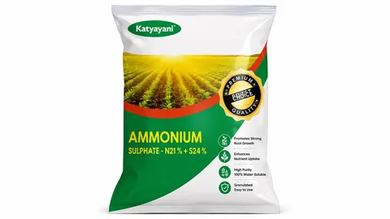
⚖️
खाद · तुलना
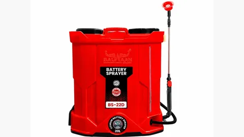
🚿
यूरिया · छिड़काव
यूरिया का छिड़काव — 15 लीटर पंप में कितना डालें?
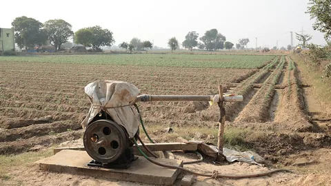
💧
यूरिया · सिंचाई
यूरिया डालने के बाद पानी कब दें? 24 घंटे का नियम
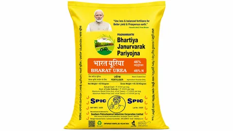
💵
यूरिया · दाम
यूरिया की बोरी का रेट 2026 — 45 किलो ₹266.50 में
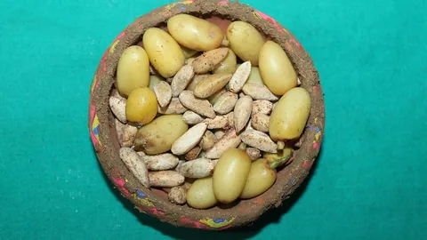
🌿
यूरिया · खाद
नीम कोटेड यूरिया क्या है? फायदा, पहचान और सच्चाई
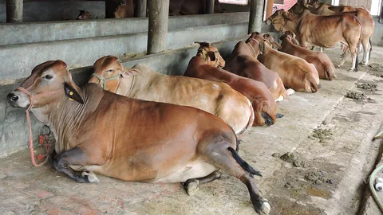
🐄
पशुपालन
डेयरी फार्म कैसे शुरू करें — नस्ल, चारा और दूध का हिसाब
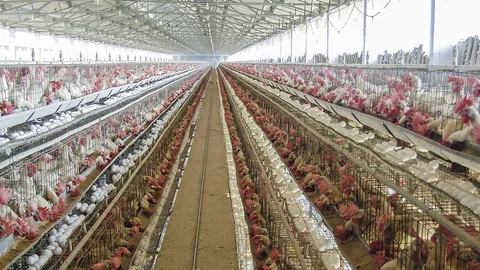
🐔
पशुपालन · रोग
रानीखेत रोग — मुर्गी में लक्षण, टीका और बचाव
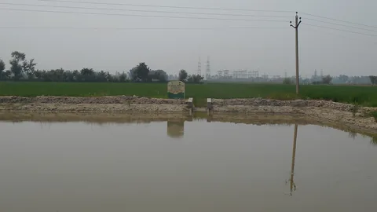
💧
ಯೋಜನೆ · ಕರ್ನಾಟಕ
ಕೃಷಿ ಭಾಗ್ಯ — ಕೃಷಿ ಹೊಂಡ ಮತ್ತು ಸಹಾಯಧನ
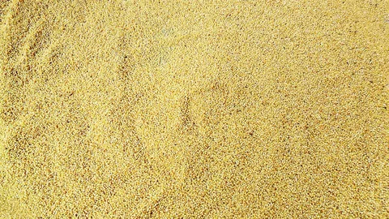
🌾
ಯೋಜನೆ · ಕರ್ನಾಟಕ
ರೈತ ಸಿರಿ ಯೋಜನೆ — ಸಿರಿಧಾನ್ಯಕ್ಕೆ ಪ್ರೋತ್ಸಾಹಧನ
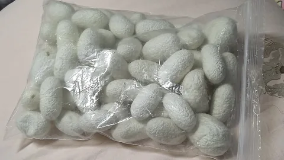
🧵
ಕರ್ನಾಟಕ
ರೇಷ್ಮೆ ಕೃಷಿ — ಸೋಂಕು ನಿವಾರಣೆ ಮತ್ತು ಗೂಡಿನ ದರ
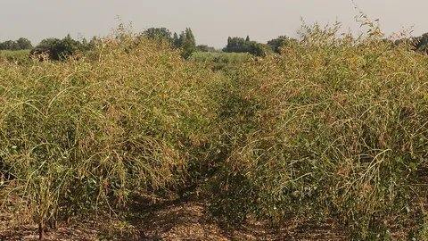
🫘
ಕರ್ನಾಟಕ
ತೊಗರಿ — ಸೊರಗು ರೋಗ, ಕಾಯಿ ಕೊರಕ ಮತ್ತು ಬೆಂಬಲ ಬೆಲೆ
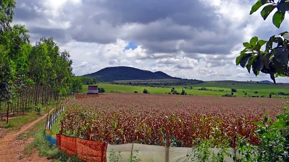
🌽
ಕರ್ನಾಟಕ
ಮೆಕ್ಕೆಜೋಳ — ಸೈನಿಕ ಹುಳು ಮತ್ತು ಬೆಂಬಲ ಬೆಲೆ
🥥
ಕರ್ನಾಟಕ
ತೆಂಗು ಮತ್ತು ಕೊಬ್ಬರಿ — ತಿಪಟೂರು ಪಟ್ಟಿಯ ಮಾರ್ಗದರ್ಶಿ
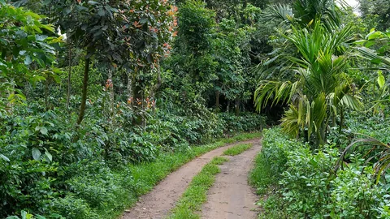
☕
ಕರ್ನಾಟಕ
ಕಾಫಿ ಬೆಳೆ — ಬಿಳಿ ಕಾಂಡ ಕೊರಕ ಮತ್ತು ಸಂಸ್ಕರಣೆ
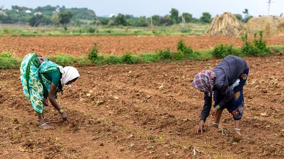
🪪
ಕರ್ನಾಟಕ
ಫ್ರೂಟ್ಸ್ ಐಡಿ (FID) — ನೋಂದಣಿ, ದಾಖಲೆ ಮತ್ತು ಪ್ರಯೋಜನ
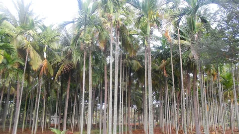
🌴
ಕರ್ನಾಟಕ
ಅಡಿಕೆ — ಕೊಳೆ ರೋಗ ಮತ್ತು ಹಳದಿ ಎಲೆ ರೋಗ ನಿರ್ವಹಣೆ
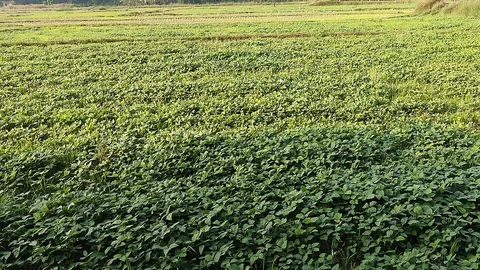
🫘
பயறு · தமிழ்நாடு
நெல்லுக்குப் பின் உளுந்து — உழவில்லா இலவசப் பயிர்
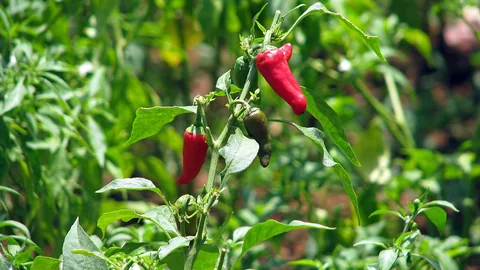
🌶️
மிளகாய் · தமிழ்நாடு
முண்டு மிளகாய் — இராமநாட்டு GI சிவப்பு மிளகாய்
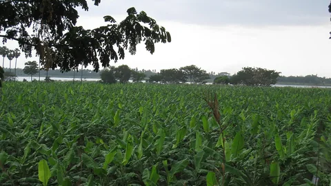
🍌
வாழை · தமிழ்நாடு
வாழை சாகுபடி — தமிழ்நாட்டு ரகங்களும் சந்தையும்
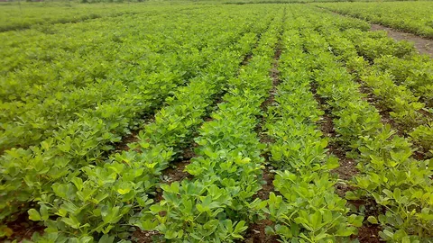
🥜
நிலக்கடலை · நோய்
நிலக்கடலை திக்கா நோய் — அடையாளமும் சரியான மருந்தும்
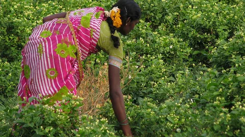
🌼
பூ · தமிழ்நாடு
மதுரை மல்லி — GI குறியீடு பெற்ற மல்லிகை சாகுபடி
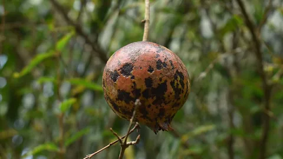
🍎
डाळिंब · रोग
डाळिंब तेल्या रोग — पहचान, फवारणी का क्रम और सही मात्रा
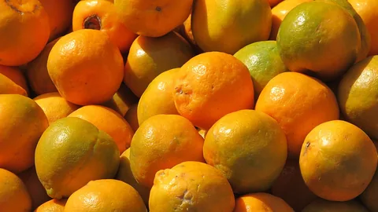
🍊
संत्रा · फळगळ
संत्रा फळगळ — चारों वजहों की पहचान और सही दवा की मात्रा
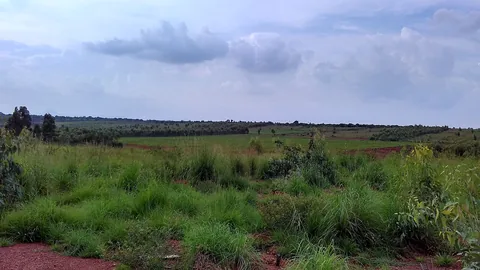
🌾
ಕರ್ನಾಟಕ
ರಾಗಿ ಬೆಳೆ ಮಾರ್ಗದರ್ಶಿ — ತಳಿ, ಬೆಂಕಿ ರೋಗ ಮತ್ತು ಬೆಂಬಲ ಬೆಲೆ
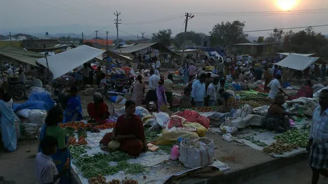
🏪
சந்தை · தமிழ்நாடு
உழவர் சந்தை — தரகர் இல்லாமல் நேரடியாக விற்பது
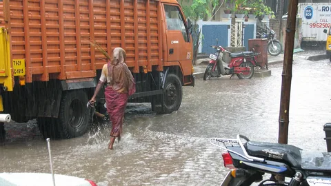
🌧️
வானிலை · தமிழ்நாடு
வடகிழக்குப் பருவமழை — அக்டோபர்-டிசம்பர் தயாரிப்பு
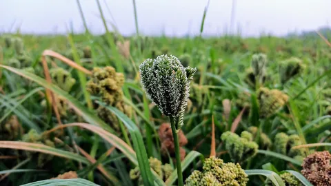
🌾
கேழ்வரகு · தமிழ்நாடு
கேழ்வரகு சாகுபடி — குறைந்த நீரின் நம்பகப் பயிர்
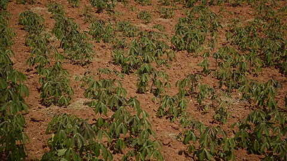
🍠
மரவள்ளி · தமிழ்நாடு
மரவள்ளியும் ஜவ்வரிசியும் — சேலம் மண்டல வழிகாட்டி
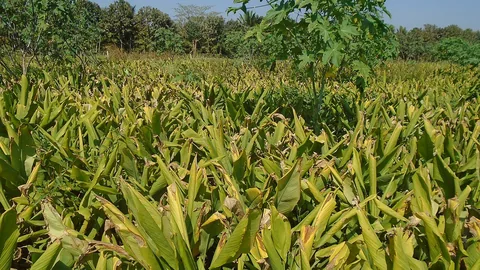
🟡
மஞ்சள் · தமிழ்நாடு
மஞ்சள் சாகுபடி — நடவு முதல் மெருகூட்டல் வரை
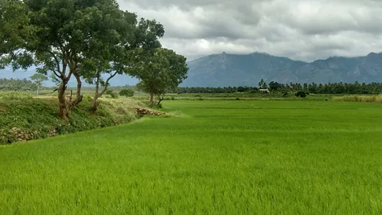
🥥
தென்னை · தமிழ்நாடு
தென்னை வெள்ளை ஈ — அடையாளமும் சரியான தீர்வும்
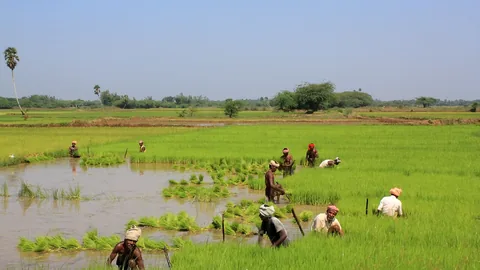
🌾
நெல் · தமிழ்நாடு
சம்பா நெல் எப்போது நடவு செய்வது — காவிரி டெல்டா வழிகாட்டி
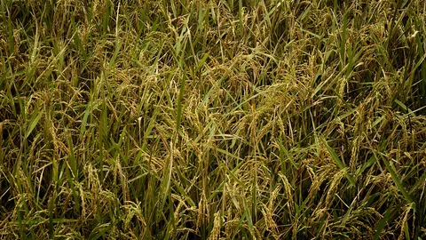
🗺️
தமிழ்நாடு
தமிழ்நாடு வேளாண் வழிகாட்டி — எந்தப் பயிர் எப்போது
🧾
MP उपार्जन
MP ई-उपार्जन पंजीयन — समर्थन मूल्य पर फसल बेचने की पूरी प्रक्रिया
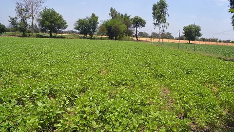
💰
MP योजना
मुख्यमंत्री किसान कल्याण योजना — MP के किसान को ₹12,000 सालाना कैसे मिलें
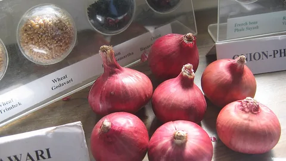
🧅
महाराष्ट्र अनुदान
कांदा चाळ अनुदान योजना — 50% अनुदान और सही चाळ की बनावट
☀️
महाराष्ट्र योजना
मागेल त्याला सौर कृषी पंप योजना — 90% तक अनुदान, अर्ज कैसे करें
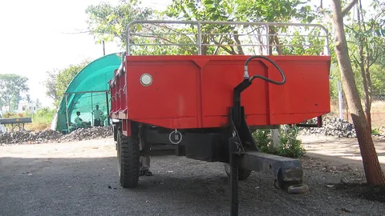
🖥️
महाराष्ट्र योजना
महाडीबीटी शेतकरी योजना — एक अर्ज में सारे कृषि अनुदान
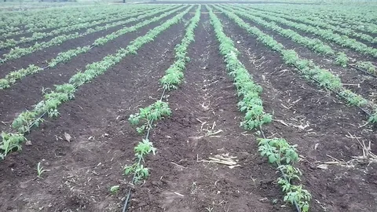
📱
महाराष्ट्र · नोंदणी
ई-पीक पाहणी 2026 — DCS MH ऐप से फसल नोंदणी कैसे करें
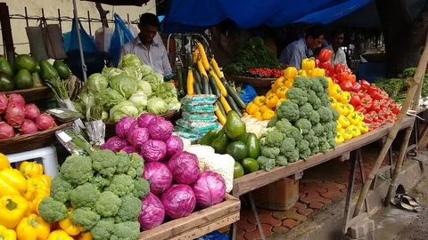
🏛️
मुंबई · मंडी
वाशी APMC मंडी (नवी मुंबई) — नीलामी का समय और पूरी प्रक्रिया
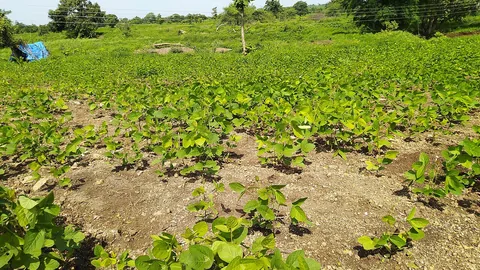
🐛
सोयाबीन कीट
सोयाबीन में इल्ली और चक्र भृंग — पहचान, दवा और सही मात्रा
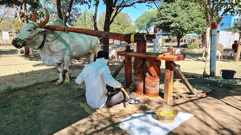
💰
महाराष्ट्र योजना
नमो शेतकरी महासन्मान निधी योजना — ₹12,000 सालाना, हप्ता व स्टेटस
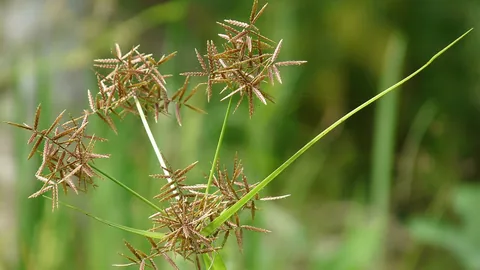
🌿
खरपतवार · तकनीक
खरपतवारनाशी — घास की पहचान, सही समय और छिड़काव का तरीका
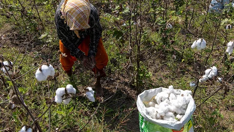
🧵
कपास · फसल गाइड
कपास की खेती — बुवाई, दूरी और गुलाबी सुंडी का पक्का इलाज
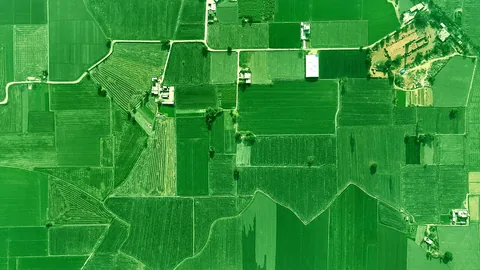
🆔
योजना · पहचान
किसान पहचान पत्र (Farmer ID) — क्या चाहिए और कहाँ बनता है
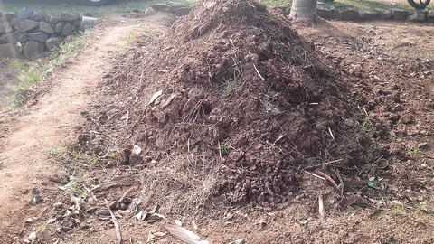
🪣
प्राकृतिक खेती
प्राकृतिक खेती — जीवामृत बनाने की विधि और असली सच
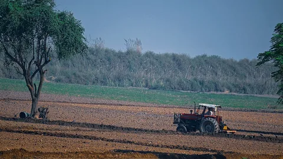
🌾
धान · तकनीक
धान की सीधी बुवाई (DSR) — पानी बचाएँ, पर घास से बचें
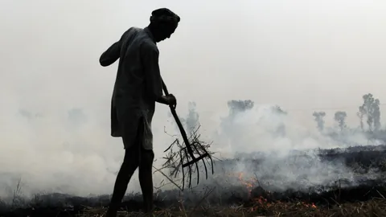
🔥
पराली · प्रबंधन
पराली प्रबंधन — जलाए बिना निपटाने के 3 असली रास्ते
 ⚗️
⚗️
गंधक · खाद
गंधक (सल्फर) की कमी — सरसों पीली क्यों और यूरिया क्यों नहीं
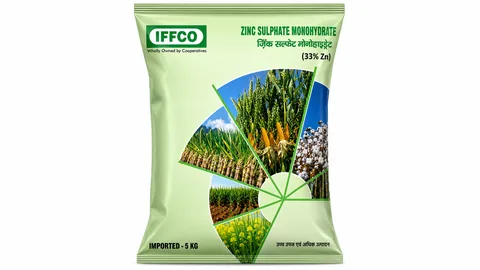
🔬
ज़िंक · खाद
ज़िंक की कमी — धान का खैरा, लक्षण, मात्रा और छिड़काव
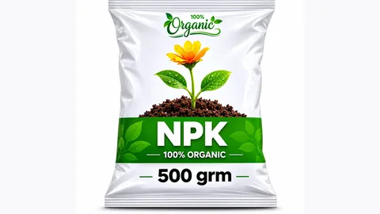
🔢
NPK · खाद
NPK खाद — 12:32:16 का मतलब और बोरे का पूरा हिसाब
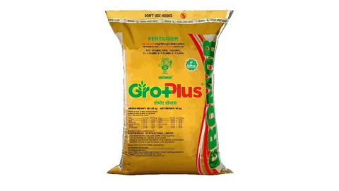
🧪
SSP · खाद
SSP खाद — DAP से कब बेहतर है और फसलवार कितनी मात्रा
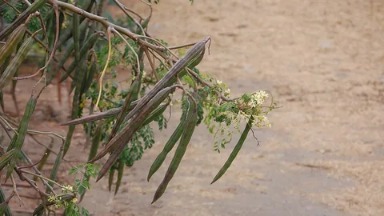
🌿
सहजन · पेड़
सहजन (मुनगा) की खेती — 6 महीने में फली और छँटाई का राज़
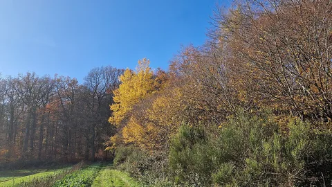
🌲
पॉपलर · पेड़
पॉपलर की खेती — गेहूं के साथ 5–7 साल में तैयार होने वाला पेड़
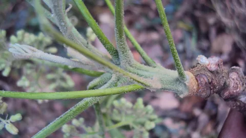
🌱
मालाबार नीम · पेड़
मालाबार नीम (मेलिया डूबिया) — 6–8 साल में तैयार होने वाली प्लाईवुड लकड़ी
🪴
महोगनी · पेड़
महोगनी की खेती — बड़े दावों की सच्चाई और भारत में असली बाज़ार
🌿
यूकेलिप्टस · पेड़
यूकेलिप्टस (सफेदा) की खेती — 4–6 साल में कटाई और पानी का सच
🪵
चंदन · पेड़
चंदन की खेती — होस्ट पौधा, हार्टवुड, कानून और चोरी का सच
🎋
बांस · पेड़
बांस की खेती — हर साल कटाई, बिना परमिट और बांस मिशन की सब्सिडी
🌳
सागौन · पेड़
सागौन (टीक) की खेती — कितने साल, कितनी कमाई और कटाई की अनुमति
🐟
पशुपालन
मछली पालन — तालाब की तैयारी, बीज और PMMSY सब्सिडी
🐔
पशुपालन
मुर्गी पालन कैसे शुरू करें — टीकाकरण, लागत और मुनाफ़ा
🌾
भंडारण
अनाज में घुन — भंडारण के कीट रोकने का पूरा तरीका
🌿
खरपतवार
गेहूं में गुल्ली डंडा — पहचान, सही दवा और सही समय
🤝
योजना · FPO
FPO क्या है — कैसे बनाएँ और कितना पैसा मिलता है
🚜
योजना · यंत्र
कृषि यंत्र सब्सिडी — 40–50% छूट कैसे मिलती है
🐜
सरसों कीट
सरसों में माहू (चेपा) — कब छिड़काव करें, कब नहीं
🥬
गोभी कीट
गोभी में डायमंड बैक मॉथ — पहचान, सरसों की ट्रैप फसल और इलाज
🟢
रबी सब्ज़ी
मटर की खेती — जल्दी किस्म से ऊंचा भाव कैसे पकड़ें
🫘
मसूर · फसल गाइड
मसूर की खेती — बुवाई, बीज दर और उकठा से बचाव
🌱
बीज उपचार
बीज उपचार — सही क्रम और मात्रा, आसान हिंदी में
🫘
चना · फसल गाइड
चने की खेती — किस्म, बीज दर और उकठा से बचाव
🐝
मधुमक्खी पालन
मधुमक्खी पालन — बिना ज़मीन के चलने वाला धंधा
🐓
पशुपालन
बैकयार्ड मुर्गी पालन — कम लागत में हर हफ्ते कमाई
🐄
पशुपालन
लंपी स्किन रोग — गाय-भैंस में गाँठ दिखे तो क्या करें
🫘
रबी दलहन
चने की उन्नत खेती — बुवाई का सही समय, बीज दर और फली छेदक से बचाव
🍆
बैंगन कीट
बैंगन में कीड़ा — तना-फल छेदक से बचाव का सही तरीका
🥬
भिंडी रोग
भिंडी में पीला मोज़ेक — पत्ती पीली क्यों होती है और क्या करें
🌾
धान कीट
धान में तना छेदक — सूखी गोभ पहचानें और सफेद बाली रोकें
💧
सरकारी योजना
PMKSY ड्रिप सिंचाई सब्सिडी — 55% तक अनुदान, आवेदन कहां और कैसे करें
🍄
मशरूम · फसल गाइड
मशरूम की खेती कैसे करें — बिना खेत, एक कमरे से शुरुआत की पूरी विधि
🐐
पशुपालन
बकरी पालन कैसे शुरू करें — नस्ल, बाड़ा, टीकाकरण और 50% तक सब्सिडी
🏛️
मंडी · बिक्री
e-NAM पर फसल कैसे बेचें — पंजीकरण, गुणवत्ता जाँच और सीधे खाते में भुगतान
 🧴
🧴
खाद · नैनो
नैनो यूरिया कैसे इस्तेमाल करें — सही मात्रा और क्या यह बोरी की जगह लेती है
🧪
खाद · मिट्टी
मिट्टी की जाँच कैसे कराएँ — नमूना लेने का सही तरीका और मृदा स्वास्थ्य कार्ड
🌾
गेहूं · फसल गाइड
गेहूं की उन्नत खेती — बुवाई 1–25 नवंबर, नई किस्में और 6 ज़रूरी सिंचाइयाँ
🍌
केला · रोग
केले में पनामा विल्ट (TR4) — कोई दवा नहीं, बचाव ही इलाज है
🌊
मौसम · आपदा
खेत में पानी भर जाए तो क्या करें? — पहले 48 घंटे की पूरी चेकलिस्ट
🌾
धान रोग
धान में जीवाणु झुलसा (BLB) — फंगीसाइड बेकार है, ये 3 काम करें
🎋
गन्ना कीट
गन्ने में चोटी बेधक (Top Borer) — गुच्छेदार चोटी, ट्राइकोकार्ड और सही दवा
🫘
अरहर · फसल गाइड
अरहर (तुअर) की खेती — मेड़ पर बुवाई, निपिंग और फली छेदक का प्रबंधन
अदरक-हल्दी रोग
अदरक और हल्दी में कंद सड़न — पीले पौधे, बदबूदार गाँठ और सही इलाज
🌶️
मिर्च कीट
मिर्च में काला थ्रिप्स — फूल क्यों झड़ते हैं और कौन सी दवा असरदार है
🧅
प्याज · फसल गाइड
खरीफ प्याज की खेती — रोपाई, उठी क्यारी और भंडारण की पूरी विधि
☀️
सरकारी योजना
PM-KUSUM सोलर पंप योजना — 60% तक सब्सिडी, आवेदन कहाँ और कैसे करें
🛡️
सरकारी योजना
फसल बीमा 2026 — आखिरी तारीख 31 जुलाई, प्रीमियम सिर्फ 2%
🧶
जूट · पाट
जूट (पाट) की सड़ाई कैसे करें — MSP ₹5,925 और बेहतर ग्रेड की पूरी विधि
🫘
सोयाबीन रोग
सोयाबीन में पीला मोज़ेक रोग — सफेद मक्खी रोकें, दवा और सही डोज़
🌾
बाजरा रोग
बाजरे में जोगिया रोग (हरी बाली) — पहचान, बीज उपचार और नियंत्रण
🌾
धान कीट
धान में भूरा फुदका (भूरा माहू) — पहचान, ETL और सबसे असरदार दवा
🌽
मक्का कीट
मक्का में फॉल आर्मीवर्म (फौजी कीट) — पहचान, दवा और नियंत्रण
🧵
कपास कीट
कपास में गुलाबी सुंडी (Pink Bollworm) — पहचान, दवा और रोकथाम
💳
सरकारी योजना
किसान क्रेडिट कार्ड (KCC) 2026 — ब्याज सिर्फ 4%, ₹5 लाख तक लोन
🌾
गेहूं रोग
गेहूं का रतुआ (गेरुई) रोग — पहचान, कारण और रोकथाम
🥔
आलू रोग
आलू का पछेती झुलसा (Late Blight) — पहचान, कारण और रोकथाम
🌾
धान रोग
धान का झोंका रोग (Rice Blast) — पहचान, कारण और रोकथाम
🍅
टमाटर रोग
टमाटर की पत्ती मरोड़ रोग — पहचान, कारण और रोकथाम
🧪
खाद
यूरिया और DAP: कब और कितना दें?HOT
♻️
खाद
घर पर जैविक खाद कैसे बनाएं?
🐛
कीट
फसल में कीट नियंत्रण के देसी उपाय
🌿
खरपतवार
मोथा घास मारने की दवा — पहचान और जड़ से खात्मे के उपाय
🌦️
मौसम
मौसम के अनुसार खेती की योजना कैसे बनाएं?
🎋
गन्ना
गन्ने में लाल सड़न रोग: पहचान व उपचार
🎋
गन्ना
UP में गन्ने की खेती — सम्पूर्ण मार्गदर्शिकाNEW
🥔
सब्जी
UP में आलू की खेती — सम्पूर्ण मार्गदर्शिकाNEW
🍅
ಕರ್ನಾಟಕ
ಟೊಮೆಟೊ ಬೆಳೆ ಮಾರ್ಗದರ್ಶಿ — ಕರ್ನಾಟಕNEW
🌶️
सब्जी
ಮೆಣಸಿನಕಾಯಿ ಬೆಳೆ — कर्नाटक मिर्ची गाइडNEW
🌾
कर्नाटक
ಭತ್ತದ ಬೆಳೆ — कर्नाटक धान गाइडNEW
🌧️
कर्नाटक
Karnataka Monsoon Farming PlanHOT
🧪
खाद
DAP खाद का सही उपयोग — कब, कितना, कैसे?
🧪
खाद
MOP (पोटाश) का सही उपयोग — सम्पूर्ण गाइड
🏭
गन्ना
UP में चीनी उत्पादन — सम्पूर्ण मार्गदर्शिका
📊
गन्ना
गन्ने का मूल्य विश्लेषण 2025–26 — SAP, FRP व मंडी भावNEW
🧄
सब्जी
लहसुन की खेती — मंदसौर/MP सम्पूर्ण गाइड
🧅
सब्जी
प्याज की खेती — महाराष्ट्र/MP सम्पूर्ण गाइड
🥭
फल
UP में आम की खेती — सम्पूर्ण मार्गदर्शिका
🥭
फल
MP में आम की खेती — सम्पूर्ण मार्गदर्शिका
🍒
फल
महाराष्ट्र में अनार की खेती — सम्पूर्ण गाइड
🍎
फल
कश्मीर में सेब की खेती — सम्पूर्ण मार्गदर्शिका
🍇
फल
अंगूर की खेती — महाराष्ट्र सम्पूर्ण गाइड
🫐
फल
लीची की खेती — मुजफ्फरपुर/बिहार सम्पूर्ण गाइड
📈
अनाज
UP में गेहूं का भाव विश्लेषण 2025–26 — मंडी दर व MSPNEW
🌽
अनाज
मक्का की खेती — UP सम्पूर्ण गाइड
🌼
अनाज
सरसों की खेती — सम्पूर्ण रबी मार्गदर्शिका
🫘
अनाज
सोयाबीन की खेती — मध्य प्रदेश सम्पूर्ण गाइड
🥜
अनाज
मूंगफली की खेती — राजस्थान सम्पूर्ण गाइड
🏛️
जानकारी
PM किसान सम्मान निधि — सम्पूर्ण जानकारी 2025-26HOT
 🏞️
🏞️
जानकारी
UP में कृषि भूमि के दाम 2025 — जिलेवार भाव
🌾
जानकारी
उत्तर प्रदेश की खेती — सम्पूर्ण मार्गदर्शिका
कोई लेख नहीं मिला
दूसरे शब्दों से खोजें या श्रेणी बदलें
विज्ञापन
विज्ञापन